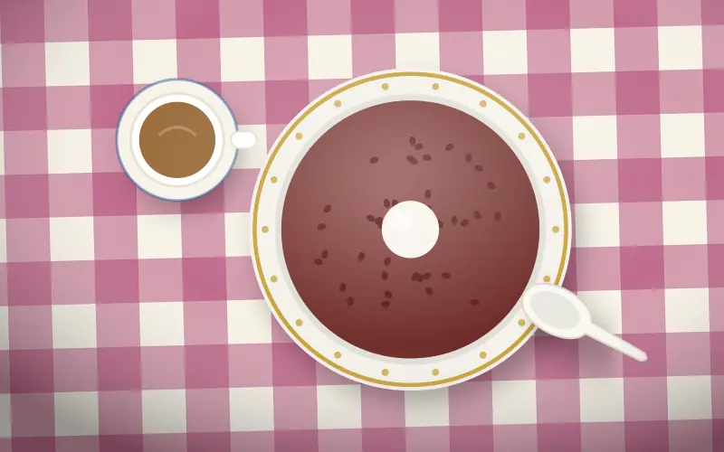
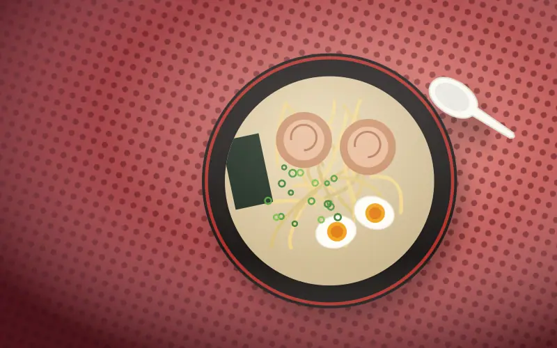
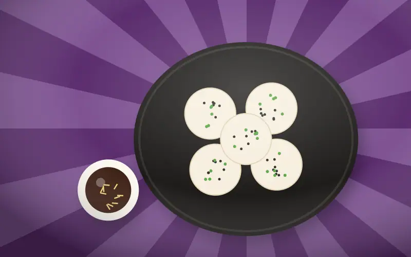
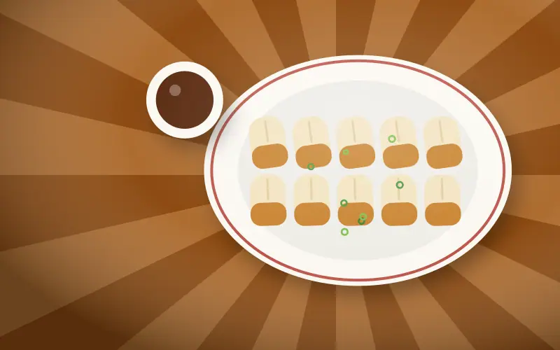

Cheap eats in Wan Chai 灣仔區
17 places, from $20. Tap one for prices, hours and the nearest MTR.
 Joy Hing Roasted Meat再興燒臘飯店 · Wan Chai$58
Joy Hing Roasted Meat再興燒臘飯店 · Wan Chai$58  Ho Hung Kee何洪記 · Causeway Bay$88
Ho Hung Kee何洪記 · Causeway Bay$88  Bakehouse (Wan Chai)Bakehouse（灣仔） · Wan Chai~$52
Bakehouse (Wan Chai)Bakehouse（灣仔） · Wan Chai~$52 Kam's Roast Goose甘牌燒鵝 · Wan Chai$92
Kam's Roast Goose甘牌燒鵝 · Wan Chai$92  Happy Cake Shop快樂餅店 · Wan Chai~$20
Happy Cake Shop快樂餅店 · Wan Chai~$20 Capital Cafe華星冰室 · Wan Chai$48
Capital Cafe華星冰室 · Wan Chai$48  Wing Wah Noodle Shop永華麵家 · Wan Chai$78
Wing Wah Noodle Shop永華麵家 · Wan Chai$78  Kam Fung Cafe金鳳茶餐廳 · Wan Chai$36
Kam Fung Cafe金鳳茶餐廳 · Wan Chai$36  Cheung Hing Coffee Shop祥興咖啡室 · Happy Valley~$34
Cheung Hing Coffee Shop祥興咖啡室 · Happy Valley~$34
Yee Shun Milk Company義順牛奶公司 · Causeway Bay$42
Ichiran (Causeway Bay)一蘭（銅鑼灣） · Causeway Bay~$105 Kung Tak Lam功德林 · Causeway Bay$98
Kung Tak Lam功德林 · Causeway Bay$98 
Shanghai Lane (Causeway Bay)上海弄堂菜肉餛飩（銅鑼灣） · Causeway Bay$62 Tam Jai Yunnan Mixian (Wan Chai)譚仔雲南米線（灣仔） · Wan Chai$56
Tam Jai Yunnan Mixian (Wan Chai)譚仔雲南米線（灣仔） · Wan Chai$56 
Bafang Dumpling (Causeway Bay)八方雲集（銅鑼灣） · Causeway Bay$52 Meet Fresh (Causeway Bay)鮮芋仙（銅鑼灣） · Causeway Bay$42
Meet Fresh (Causeway Bay)鮮芋仙（銅鑼灣） · Causeway Bay$42  Yoshinoya (Happy Valley)吉野家（跑馬地） · Happy Valley$48
Yoshinoya (Happy Valley)吉野家（跑馬地） · Happy Valley$48